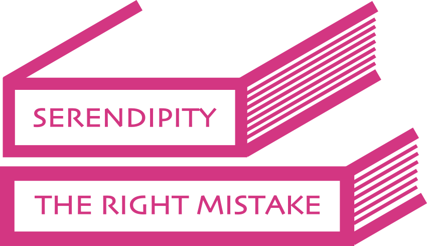

|  |
Titling
"Titling", an activity started with college roommate Lucas Garron, is an activity in libraries where one assembles collections of books with promising titles and attempts to group them in profound or humorous ways, to have their titles read together.
Titling first began in October 2011. We have a Tumblr, where we post a Titling a day. It's currently on hiatus, but ran almost non-stop for over a year.
|